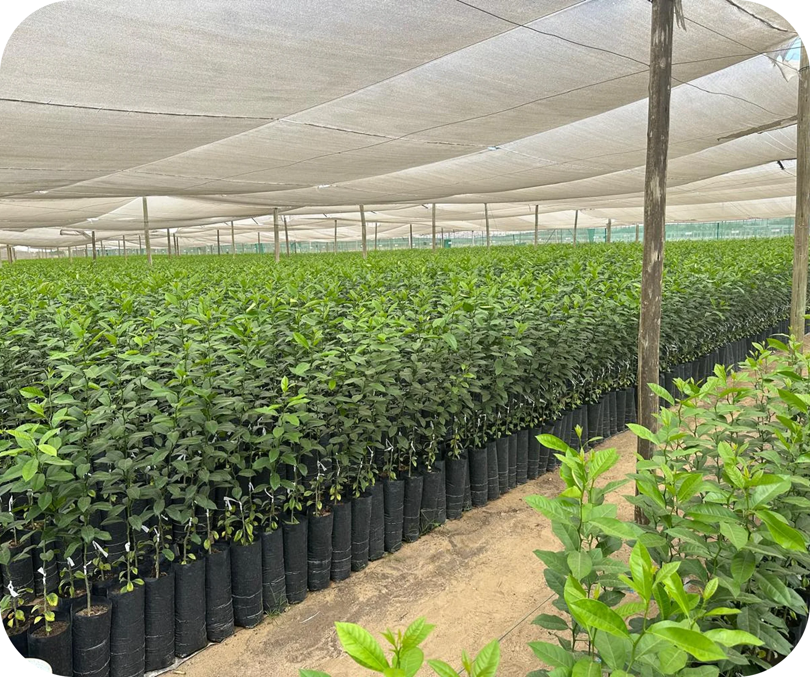

Sur Andina es un proyecto agroindustrial de 500 Hectáreas, distribuidas en cítricos y cultivos, desarrollado en Olmos, Perú, donde se ejecutó la habilitación integral del predio, incorporando infraestructura, recursos hídricos, sistemas de riego, plantación y obras estratégicas que permiten una operación agrícola eficiente de cara a mercados de agroexportación.
Sur Andina
